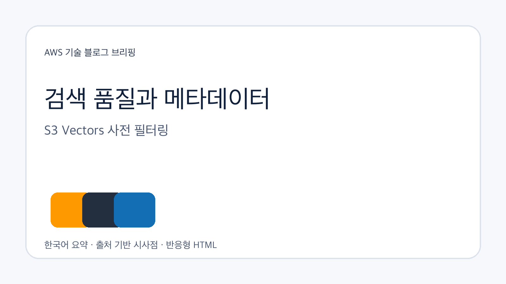
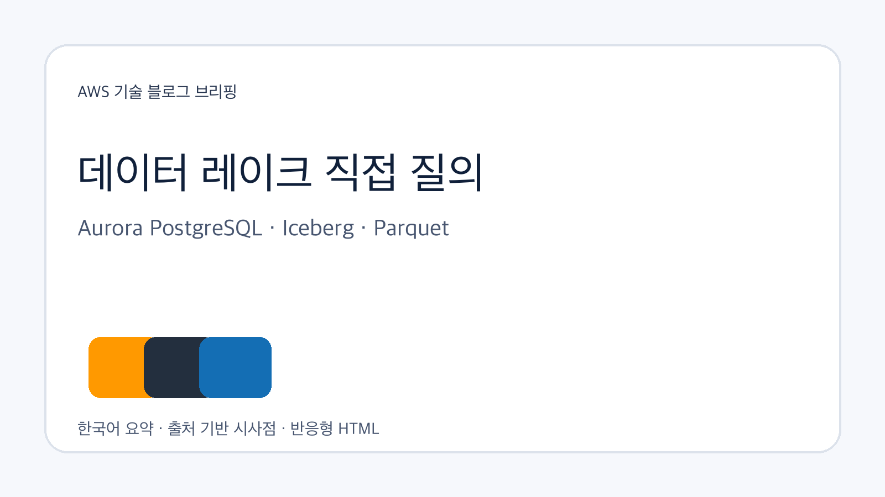
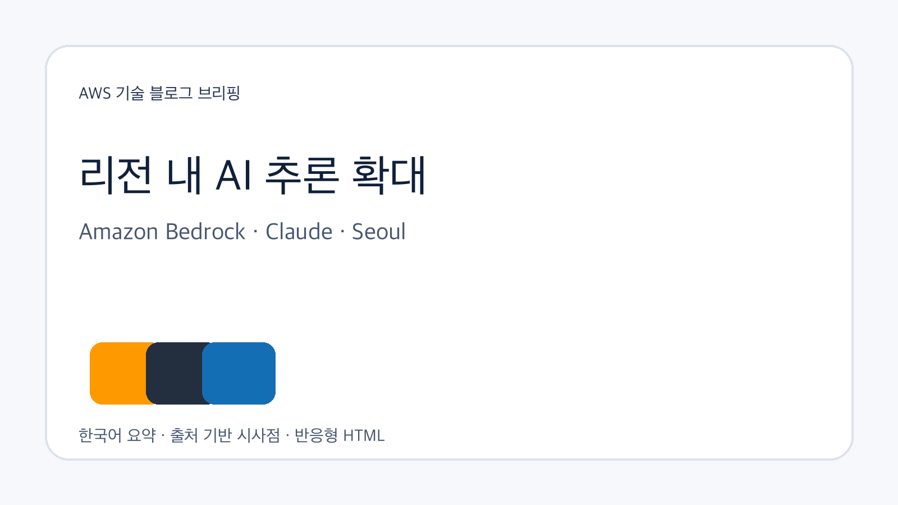

Data/Analytics
Amazon S3 Vectors 메타데이터 사전 필터링으로 검색 정확도 개선
벡터 검색에서 필터 조건을 유사도 검색 전에 적용해 범위가 제한된 검색의 재현율을 높이는 업데이트입니다. RAG·문서 검색·에이전트 검색에서 메타데이터 설계가 검색 품질의 핵심 변수가 됩니다.
원문 보기공식 RSS 3개에서 신규 글 7건을 수집하고, 원문 저장·LLM Wiki 동기화·GBrain 파일 단위 import 후 기업 의사결정 관점의 시사점을 정리했습니다.

벡터 검색에서 필터 조건을 유사도 검색 전에 적용해 범위가 제한된 검색의 재현율을 높이는 업데이트입니다. RAG·문서 검색·에이전트 검색에서 메타데이터 설계가 검색 품질의 핵심 변수가 됩니다.
원문 보기Aurora PostgreSQL이 Apache Iceberg와 Parquet 데이터를 직접 조회하면서 운영 데이터와 이력 데이터를 같은 SQL 맥락에서 다룰 수 있게 됐습니다. 별도 ETL 없이 분석 접근을 넓히는 대신 권한·카탈로그·성능 경계를 함께 점검해야 합니다.
원문 보기AWS 전문가 커뮤니티와 지식 공유 생태계의 확장을 보여주는 업데이트입니다. 기술 자체보다 조직 내 학습·전파 채널을 어떻게 확보할지가 클라우드 활용 역량의 차이를 만듭니다.
원문 보기청구 문서를 Amazon S3에서 수집하고 AgenticRetrieveStream API, 메타데이터 필터, 출처 인용을 결합하는 예시입니다. 업무 질의형 AI에는 답변 생성보다 근거·필터·대화 맥락 관리가 중요합니다.
원문 보기GPU 인스턴스, 지속 볼륨, 다일 세션, 공유 파일시스템을 활용해 여러 에이전트가 같은 실행 환경에서 협업하는 사례입니다. 창작 예시이지만 장시간·상태 공유형 에이전트 워크플로 설계에 참고할 수 있습니다.
원문 보기인도 리전 안에서 Claude 모델을 처리할 수 있는 선택지가 추가됐습니다. 데이터 주권과 리전 내 처리 요구가 강한 시장에서는 모델 성능만큼 지역별 추론 위치가 구매 기준이 됩니다.
원문 보기서울 리전에서 Claude Opus 5와 Claude Sonnet 5를 리전 내 추론으로 사용할 수 있다는 점이 핵심입니다. 한국 조직은 민감 데이터 처리 위치와 지연 시간 요구를 함께 검토할 수 있습니다.
원문 보기이번 수집에서는 벡터 검색 품질, 데이터 레이크 직접 질의, 리전 내 AI 추론, 상태 공유형 에이전트 실행 환경이 함께 관찰됐습니다. 공통점은 기능 단위 출시보다 데이터 위치, 검색 조건, 권한, 실행 지속성 같은 설계 조건이 더 구체화되고 있다는 점입니다.

| 기사 | 게시 | 카테고리 |
|---|---|---|
| Amazon S3 Vectors 메타데이터 사전 필터링으로 검색 정확도 개선 | 2026-10-01 | Data/Analytics |
| Amazon Aurora PostgreSQL, 데이터 레이크의 Apache Iceberg·Parquet 직접 조회 지원 | 2026-10-01 | Data/Analytics |
| 2026년 9월 신규 AWS Heroes 발표 | 2026-10-01 | Cloud |
| Amazon Bedrock Knowledge Bases로 보험 청구 질의를 자연어로 처리하는 방법 | 2026-10-01 | AI/ML |
| Amazon Bedrock AgentCore Runtime Instances 기반 멀티 에이전트 음악 제작 파이프라인 | 2026-10-01 | AI/ML |
| Amazon Bedrock, 인도 내 Claude 모델 추론 지원 확대 | 2026-09-30 | AI/ML |
| Amazon Bedrock, 서울·싱가포르 리전 내 Anthropic 모델 추론 지원 | 2026-09-30 | AI/ML |
서울 리전 내 Anthropic 모델 추론 지원은 한국 조직의 데이터 위치 요구와 지연 시간 검토에 직접 연결됩니다. 다만 각 모델, 리전, API의 실제 사용 가능 조건과 요금은 원문과 AWS 콘솔에서 확인이 필요합니다.
